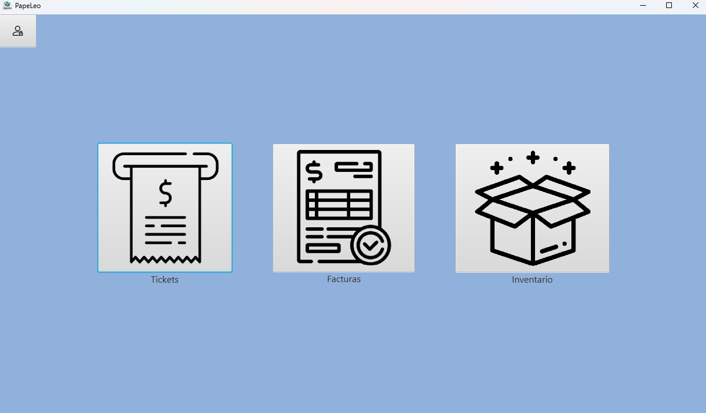
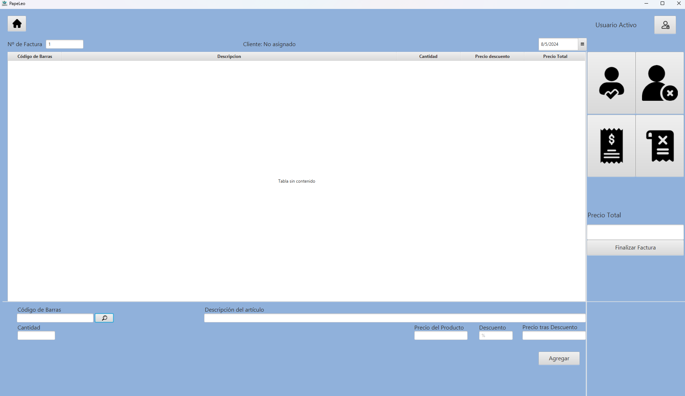

Guía para: ¿Cómo generar una factura?
En esta guía te explicaremos paso a paso cómo generar una factura
1. Accede a la sección "Facturas"

En la pantalla principal selecciona el icono situado en el medio con el texto "Facturas"
2. ¿Como agregar un usuario/producto a la Factura?

Cómo podemos observar, a excepción del campo de Nº de Factura que nos deja introducir un numero personalizado en lugar del autogenerado, y el selector de fechas que se encuentra en la parte superior derecha, la interfaz de Factura es identica a la de Tickets y funciona de igual forma
Por lo que en respecto a como añadir un Cliente o Producto, se puede encontrar la información en el apartado 2 y 3 de la Guía de tickets, a la cual puedes acceder pulsando aquí